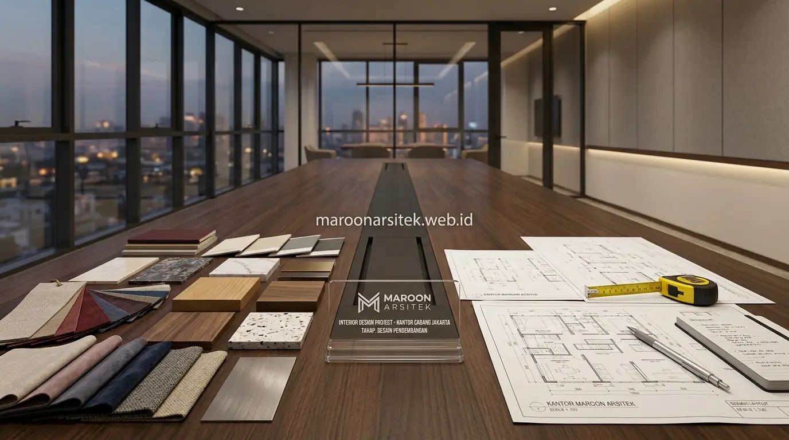

Peran arsitek rumah sangat krusial dalam mengendalikan anggaran sejak tahap desain, memastikan kepatuhan terhadap regulasi bangunan, serta menjembatani komunikasi antara klien dan kontraktor, sehingga risiko kesalahan bangun dapat dicegah dari berbagai sisi sekaligus, bukan hanya dari aspek teknis gambar kerja. Maroon Arsitek menempatkan ketiga peran ini sebagai bagian tak terpisahkan dari layanan arsitek rumah tinggal profesional yang diberikan kepada klien di seluruh Indonesia.
Anggapan bahwa arsitek hanya menambah biaya tanpa manfaat nyata sering muncul karena peran pengendalian anggaran dan mediasi komunikasi tidak selalu terlihat jelas dibanding hasil visual gambar desain. Padahal, tanpa perencanaan yang matang, proyek konstruksi sering mengalami risiko pembengkakan biaya (overbudget) akibat revisi bongkar-pasang di lapangan. Bagian berikut menguraikan tiga peran konkret arsitek yang secara langsung mencegah kesalahan dan kerugian finansial dalam proyek bangun rumah.
Peran Arsitek dalam Mengendalikan Anggaran Sejak Tahap Desain
Arsitek berperan mengendalikan anggaran sejak tahap desain melalui penyesuaian spesifikasi dan kompleksitas bentuk bangunan dengan batasan anggaran yang dimiliki klien, mencegah desain yang terlalu ambisius namun tidak realistis terhadap kemampuan finansial. Peran ini sering luput dari perhatian klien yang baru menyadari pentingnya setelah berkonsultasi dengan tim jasa kontraktor rumah.
Sejak sesi konsultasi awal, arsitek memberikan gambaran realistis mengenai implikasi biaya dari setiap keputusan desain, seperti penggunaan bentuk atap tertentu, bentang struktur tanpa kolom, atau pemilihan material fasad tertentu, sehingga klien dapat mengambil keputusan berdasarkan panduan cara menghitung biaya bangun rumah yang transparan sebelum desain difinalisasi.
Kendali anggaran ini berlanjut hingga tahap penyusunan gambar kerja, di mana spesifikasi material dicantumkan secara realistis sesuai kisaran anggaran yang telah disepakati, mengurangi risiko kontraktor mengajukan biaya jauh di luar ekspektasi klien pada tahap simulasi rumus cepat estimasi biaya bangun rumah maupun penyusunan dokumen anggaran resmi.
Estimasi Implikasi Biaya pada Setiap Opsi Desain
Kebutuhan klien untuk memahami konsekuensi finansial dari pilihan desain dijawab melalui estimasi implikasi biaya yang disampaikan arsitek pada setiap opsi yang didiskusikan, sebelum klien menentukan pilihan akhir yang akan dituangkan dalam gambar kerja.
Estimasi ini membantu klien menghindari kekecewaan di kemudian hari, karena keputusan desain yang diambil sejak awal telah mempertimbangkan implikasi biaya secara transparan, bukan baru diketahui setelah kontraktor mengajukan penawaran harga. Dengan demikian, pemilik rumah dapat mengevaluasi efisiensi struktur bersama arsitek sebelum masuk ke tahap eksekusi fisik.
Peran Arsitek dalam Memastikan Kepatuhan Regulasi Bangunan
Arsitek memastikan desain rumah mematuhi regulasi tata ruang dan bangunan yang berlaku di wilayah proyek, termasuk ketentuan mengenai garis sempadan bangunan (GSB) dan koefisien dasar bangunan (KDB), mencegah masalah hukum yang dapat menghentikan proyek di tengah jalan. Peran ini krusial namun sering diabaikan oleh klien yang belum familiar dengan perizinan bangunan gedung.
Pemeriksaan kepatuhan regulasi dilakukan sejak tahap perencanaan denah dasar, memastikan posisi dan dimensi bangunan sesuai ketentuan perizinan PBG resmi, sehingga proses pengajuan izin bangunan dapat berjalan lancar tanpa hambatan administratif ketika proyek hendak dibangun atau saat melakukan renovasi rumah tinggal.
Ketidakpatuhan terhadap regulasi yang baru diketahui setelah konstruksi berjalan berisiko menyebabkan pembongkaran sebagian bangunan oleh dinas tata kota. Oleh karena itu, memastikan kepatuhan sejak awal menjadi bentuk proteksi investasi yang nilainya jauh melampaui tarif biaya jasa arsitek yang dikeluarkan di awal.

Pemeriksaan Garis Sempadan dan Koefisien Dasar Bangunan
Kebutuhan kepastian hukum atas posisi bangunan dijawab melalui pemeriksaan garis sempadan dan koefisien dasar bangunan sejak tahap perencanaan denah, memastikan desain yang dihasilkan tidak melanggar ketentuan yang berlaku di wilayah proyek berada.
Pemeriksaan ini mencegah risiko penolakan izin bangunan atau tuntutan pembongkaran di kemudian hari, yang dapat menimbulkan kerugian finansial sangat besar dibanding investasi awal saat Anda memilih jasa arsitek rumah berpengalaman yang paham seluk-beluk regulasi daerah.
Peran Arsitek sebagai Jembatan Komunikasi Klien dan Kontraktor
Arsitek berperan menjembatani komunikasi teknis antara klien dan kontraktor pelaksana, menerjemahkan keinginan klien menjadi instruksi teknis yang dapat dipahami dan dieksekusi kontraktor dengan akurat, mengurangi risiko kesalahpahaman yang berujung pada kesalahan konstruksi. Peran mediasi ini penting terutama bagi klien yang tidak memiliki latar belakang teknis konstruksi sipil.
Arsitek hadir dalam pertemuan koordinasi berkala antara klien dan kontraktor pelaksana, memastikan setiap keputusan teknis yang diambil selama konstruksi tetap selaras dengan visi desain awal yang telah disepakati bersama klien di tahap perencanaan gambar kerja DED.
Ketika ditemukan kondisi lapangan tak terduga yang memerlukan penyesuaian desain, arsitek membantu menerjemahkan implikasi teknis kepada klien dan mencarikan solusi rekayasa alternatif yang tetap menjaga estetika serta standar struktur pondasi kuat, alih-alih membiarkan kontraktor mengambil keputusan sepihak di lapangan tanpa persetujuan pemilik rumah.
Penerjemahan Kebutuhan Klien Menjadi Instruksi Teknis
Kebutuhan komunikasi yang akurat dijawab melalui peran arsitek dalam menerjemahkan preferensi dan kebutuhan klien yang disampaikan secara awam menjadi instruksi teknis yang jelas dan dapat dieksekusi oleh kontraktor tanpa multitafsir.
Penerjemahan ini dituangkan dalam detail gambar kerja, jadwal material, dan spesifikasi teknis lengkap yang diselaraskan dengan dokumen RAB pembangunan rumah, sehingga setiap tukang dan mandor memiliki panduan baku dalam proses pengerjaan sehari-hari.